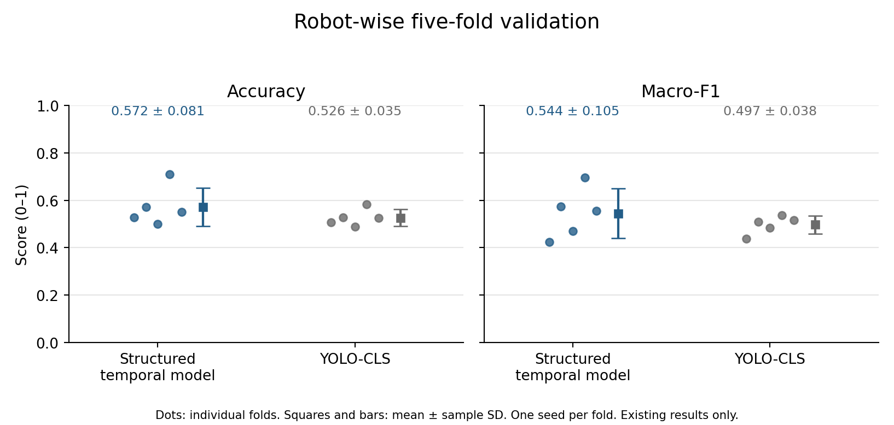

Visual Next-Step Prediction in Robotic Disassembly机器人拆解的视觉下一步预测
Predicting the next disassembly action of a robot-vacuum from a short sequence of images: YOLOv8 detects components, their states are tracked over frames, and a multi-frame Transformer (RIVET) predicts the next step. Evaluated with robot-wise five-fold cross-validation on unseen units.
从一小段图像序列预测扫地机器人的下一步拆解动作：YOLOv8 检测部件，跨帧跟踪部件状态，多帧 Transformer（RIVET）预测下一步。采用按机器人划分的五折交叉验证，在未见过的机器上评估。
My role:我的工作： Annotated over 1,000 robot-vacuum disassembly images, trained the YOLOv8 component detectors, developed the RIVET multi-frame Transformer and ran the robot-wise cross-validation. Advisor: Prof. Yang Ye.标注 1,000 余张扫地机器人拆解图像，训练 YOLOv8 部件检测器，开发多帧 Transformer 模型 RIVET，并完成按机器人划分的交叉验证。指导：Yang Ye 教授。

Overview概览
Detection and temporal evidence检测与时序证据
The method combines YOLO component detections, body/housing anchor selection, ternary component states and a temporal Transformer that predicts the next disassembly action.
该方法结合 YOLO 部件检测、body/housing 锚点筛选、三值部件状态与时序 Transformer，预测下一步拆解动作。
Results结果
Media图像与视频